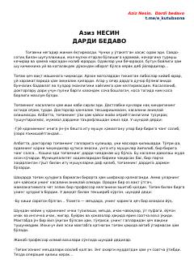

DBXasis tog'aning davolanmas dardi va ochko'z shifokorlar haqida hajviy hikoya.
Aziz Nesinning hajviy hikoyasi bo'lib, xasis tog'asining sirli kasalligi va uni davolashga uringan shifokorlarning bema'ni amaliyotlari haqida so'zlaydi. Har bir shifokor sog'lom a'zolarni kesib tashlaydi, ammo tog'aning dardi baribir yo'qolmaydi. Asar tibbiyot sohasidagi ochko'zlik va nodonlikni keskin satirik tarzda fosh etadi.